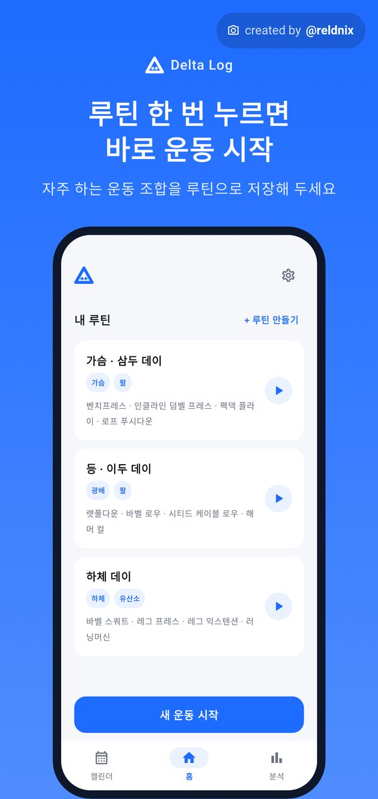
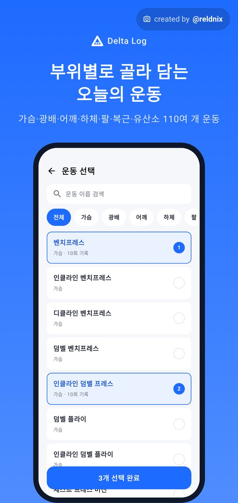
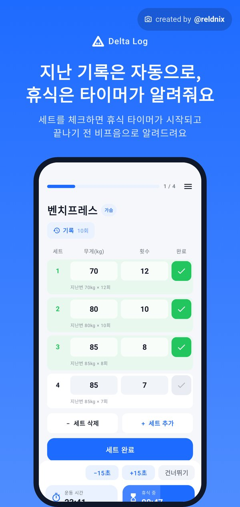
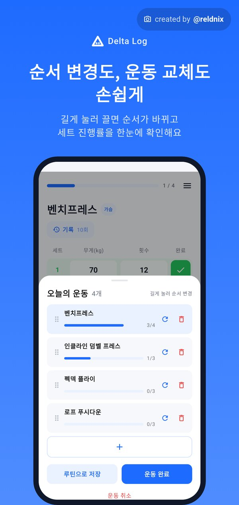
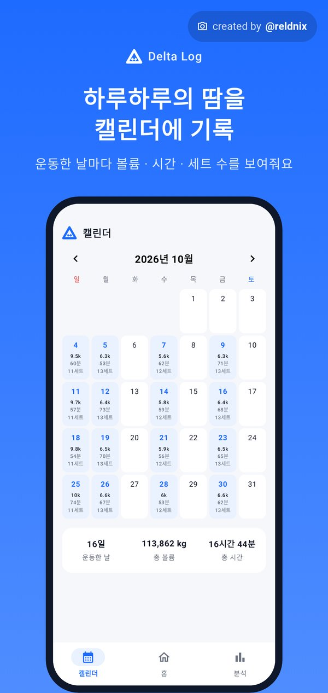
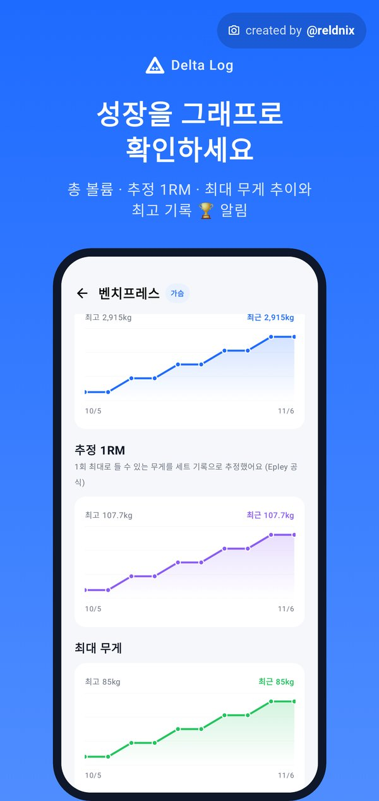
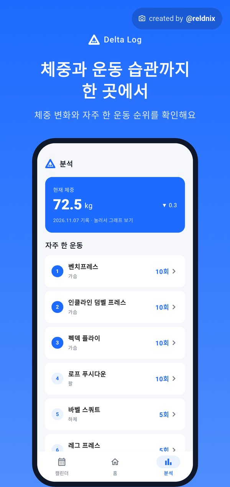
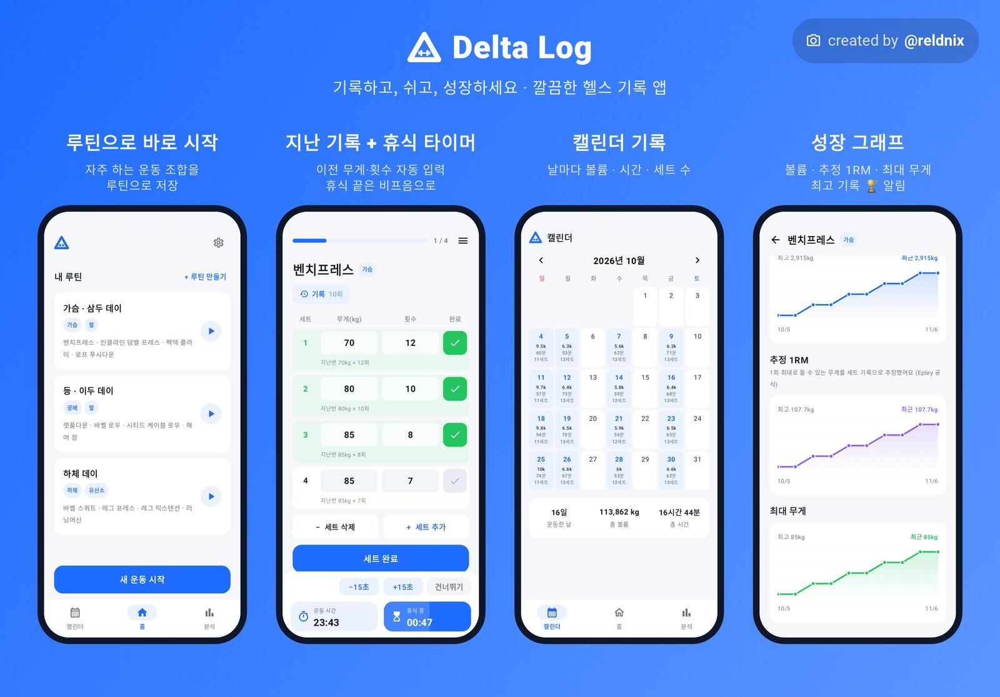

FEATURES
운동에만 집중할 수 있게
헬스장에서 필요한 기록은 몇 번의 터치로 끝나고, 쌓인 기록은 알아서 정리돼요.
루틴으로 바로 시작
자주 하는 운동 조합을 루틴으로 저장해 두고, 한 번 누르면 바로 운동을 시작해요. 운동 중에 만든 구성도 루틴으로 저장할 수 있어요.
지난 기록 자동 입력
했던 운동이면 지난번 세트 수, 무게, 횟수가 그대로 채워져요. 기록 버튼으로 과거 기록을 최근 순으로 볼 수 있어요.
세트 체크하면 휴식 타이머
세트를 완료하면 휴식 타이머가 자동으로 돌고, 끝나기 10초 전부터 비프음과 진동으로 알려줘요. 마지막으로 쓴 휴식 시간이 기억돼요.
순서 변경도, 교체도 손쉽게
메뉴에서 오늘 운동을 길게 눌러 끌면 순서가 바뀌고, 교체·삭제·추가도 바로 할 수 있어요. 운동마다 세트 진행률이 막대로 보여요.
캘린더에 남는 땀
운동한 날마다 총 볼륨, 운동 시간, 세트 수가 달력에 표시돼요. 날짜를 누르면 그날의 운동 기록을 다시 볼 수 있어요.
성장 그래프와 체중 기록
운동별 총 볼륨, 추정 1RM, 최대 무게 추이를 그래프로 보여주고 최고 기록을 세우면 🏆로 알려줘요. 체중 변화도 함께 기록해요.
부위별로 골라 담는 110여 개 운동
부위 필터로 원하는 운동을 여러 개 골라 한 번에 담아요. 푸시업·플랭크처럼 무게가 없는 운동은 횟수나 시간으로, 풀업·딥스는 추가 중량으로 기록해요. 목록에 없는 운동은 직접 추가할 수 있어요. kg·lb 전환과 기록 백업·복원도 지원해요.
SCREENS
화면 둘러보기
옆으로 밀거나 끌어서 넘겨 보세요.








Delta Log 내려받기
안드로이드 휴대폰에서 아래 버튼을 눌러 APK 파일을 받은 뒤, 설치 방법을 따라 설치해 주세요.
- 버전
- 1.6
- 파일 크기
- 약 1.2MB
- 지원 기기
- Android 8.0 이상
- SHA-256
- ae2d24fdeacc14eb024698acec38d8a2d62565949f0e1eca806a50afe105aca3
다운로드가 안 되거나 시간 초과가 뜨면 와이파이로 바꾸거나, 카카오톡·인스타그램 안의 브라우저 대신 Chrome이나 삼성 인터넷에서 열어 다시 눌러 주세요. 파일은 GitHub Releases에서 받아져요.
HOW TO INSTALL
설치 방법
Delta Log는 플레이스토어 밖에서 배포하는 앱이라, 처음 한 번은 ‘출처를 알 수 없는 앱’ 설치를 허용해야 해요. 기기마다 메뉴 이름이 조금 다를 수 있어요.
APK 내려받기
휴대폰 브라우저(크롬, 삼성 인터넷 등)에서 APK 다운로드 버튼을 눌러요. ‘유해할 수 있는 파일’ 안내가 나오면 그래도 다운로드를 눌러요.
파일 열기
다운로드 완료 알림이나 내 파일 › 다운로드 폴더에서 DeltaLog-1.6.apk를 눌러요.
이 출처 허용
‘보안을 위해 이 출처의 앱을 설치할 수 없어요’가 나오면 설정을 눌러 이 출처 허용(또는 ‘알 수 없는 앱 설치’)을 켜고 뒤로 돌아와요.
설치하고 실행
설치를 눌러요. Play 프로텍트 경고가 뜨면 세부정보 더보기 › 그래도 설치를 눌러요. 처음 실행할 때 알림을 허용하면 화면을 꺼도 휴식 타이머를 알려줘요.
새 버전이 나오면 앱을 열 때 알려줘요. 같은 방법으로 덮어 설치하면 기록이 그대로 유지돼요. 휴대폰을 바꿀 때는 앱의 설정에서 기록을 백업 파일로 내보낸 뒤 새 휴대폰에서 가져오세요.
FAQ
자주 묻는 질문
정말 무료인가요?
네, 완전 무료예요. 광고나 회원가입, 결제가 없어요.
운동 기록이 서버로 올라가나요?
아니요. 모든 기록은 휴대폰 안에만 저장되고 어디에도 업로드되지 않아요. 앱을 지우면 기록도 함께 지워지니, 필요하면 먼저 백업해 두세요.
목록에 없는 운동은 어떻게 하나요?
운동 선택 화면에서 직접 운동을 추가할 수 있어요. 추가한 운동도 기록과 그래프에 똑같이 반영돼요.
파운드(lb) 단위로도 쓸 수 있나요?
네, 설정에서 kg과 lb를 바꿀 수 있어요.
추정 1RM은 어떻게 계산하나요?
세트의 무게와 횟수로 Epley 공식을 써서 1회 최대로 들 수 있는 무게를 추정해요. 실제 1RM과는 차이가 있을 수 있어요.
아이폰에서도 쓸 수 있나요?
지금은 안드로이드(Android 8.0 이상)만 지원해요.
다운로드가 안 되거나 시간 초과가 떠요.
통신사 데이터나 앱 안 브라우저(카카오톡, 인스타그램 등)에서 GitHub 파일 서버 연결이 막히는 경우가 있어요. 와이파이로 바꾸거나 Chrome·삼성 인터넷에서 사이트를 열어 다시 눌러 주세요.
문의나 제안은 어디로 하나요?
reldnix1993@gmail.com으로 메일 보내 주세요. 버그 제보나 원하는 기능도 좋아요.